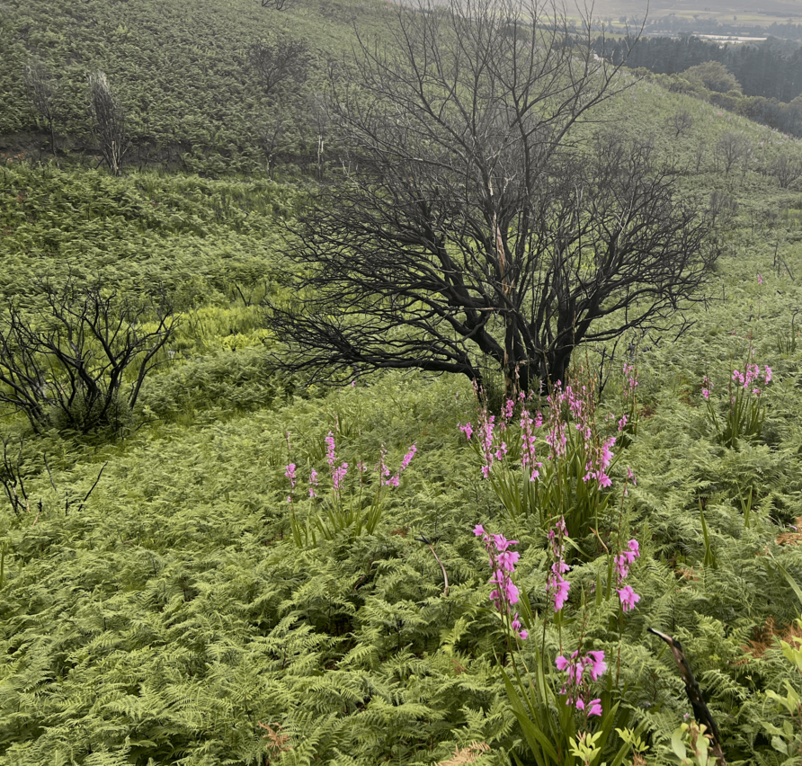

Swartboskloof lies charred and bare —
from the false heights, above the Helderberg vale,
to where soot and lifeless creatures swirl in the Eersterivier pool,
as if they sluggishly bid farewell to what was — to what they were;
while smoke from smoldering roots seeks to weave a veil
over that which now lays unveiled in raw, black nakedness,
with only the rocks still offering beacons
in the fractal-mapped emptiness,
imagined to be bordered by deeper ravines
of Corkscrew and Assegaaibosch.
Swartboskloof is adorned in floral splendor —
Watsonia and Arum lilies,
stubbornly rising from the still-scorched earth,
color the gorge with the promise of the blooming season yet to come,
quietly affirmed by a small green shoot
from the visibly charred Waboom.
Ferns outline the silver streams that froth over moss-covered stones,
your heart leaps with joy at what intuitively seems new life to be,
yet the gorge knows of no more than the eternal moment
in which it embodies both emptiness and fullness.
Swartboskloof, with gentle green curves that embrace the wounds and walls
with all that a gorge embodies,
undivided and continuous with all ravines,
in the Divine awareness of
never emptied, never fulfilled,
always perfect,
and calls:
I AM the Alpha and the Omega!